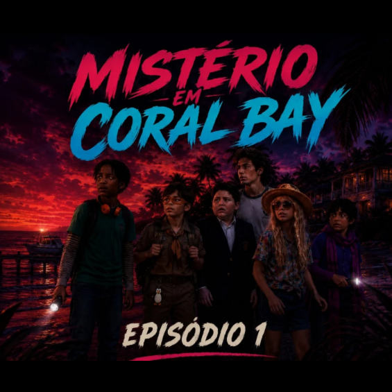

Finalmente, férias!
Os alunos do Colégio Estadual de Sacramento finalmente chegam a Coral Bay para a tão aguardada excursão ao Tropico's Marina Resort. Antes de seguirem para a ilha, aproveitam a manhã explorando a pequena cidade costeira, conhecendo seus moradores, ouvindo histórias locais e se envolvendo em pequenas confusões.
Nem tudo, porém, parece tão tranquilo quanto os panfletos turísticos prometem. Entre conversas com pescadores, comerciantes e moradores antigos, as crianças descobrem que o resort carrega uma reputação sombria. Desde 1984, pessoas desapareceram misteriosamente durante as férias de verão, e muitos habitantes da região ainda sussurram sobre a antiga lenda do Pirata Fantasma de Coral Bay.
Como se isso não bastasse, os estudantes descobrem que a Hamilton's Prince School também está participando da viagem. O encontro entre os dois colégios rapidamente gera provocações, rivalidades e alguns problemas que talvez ainda tragam consequências.
Entre brincadeiras, discussões, amizades improváveis e histórias assustadoras, os jovens embarcam rumo ao Tropico's. O resort parece exatamente aquilo que foi prometido: praias paradisíacas, diversão sem fim e um fim de semana inesquecível.
E, de uma forma ou de outra, ele realmente será.